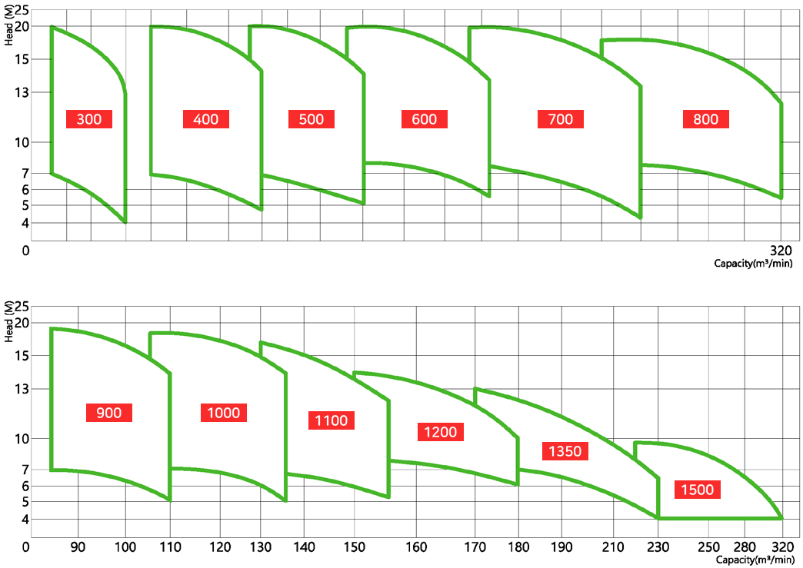

수중펌프 공사용 일반 배수용 수중 펌프(Submersible Drainage Pumps for Construction) 용도 홍수, 폭우등의 수방용 대용량, 상·하수처리장 공업용수 중양정 대유량 급·배수 기타 대용량 취급용 특징 저양정, 대유량 설계로 다양한 적용성 설치공간의 협소 및 부대설비 불필요 구조가 간단하고 유지·보수가 용이하다 이상 유무 조기 발견 (모니트링 유니트) 성능곡선도 (Performance Curve)  표준사양 (Standard Specifications) 외형치수도 (Outline Drawing and Size)